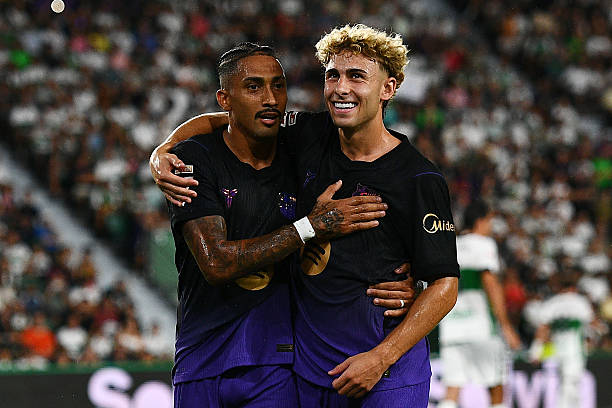
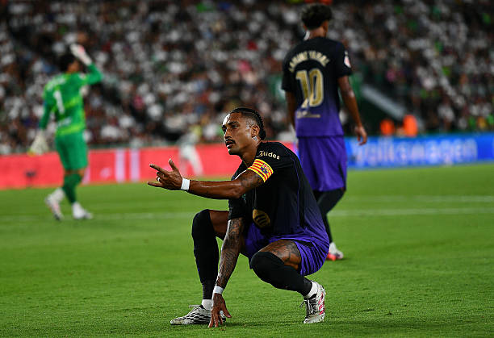
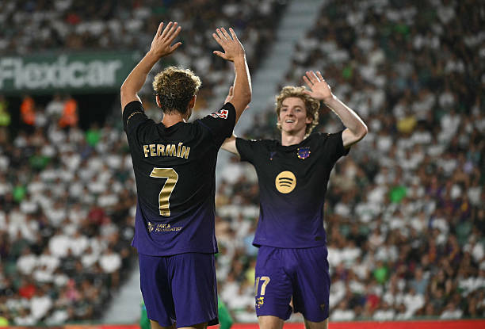

El domingo 23 de agosto se disputó el partido entre el Elche y el FC Barcelona con victoria aplastante del conjunto culer.
Raphinha x2, Fermín x2 y Adeyemi fueron los goleadores del partido.
Alineación del Elche: Dituro; Buba, Affengruber, Redondo, Chust, Valera; Villar, Aguado, Ali Houary; Morente y Niño.
Alineación del FC Barcelona: Joan García; Eric García, Christensen, Gerard Martín, Espart; Gavi, Bernal, Fermín; Lamine Yamal, Adeyemi y Raphinha.
El vigente campeón de liga comenzaba la temporada lejos de casa, visitaban el Martínez Valero para enfrentarse al Elche con un once inicial que generaba dudas, como la de iniciar con Xavi Espart de lateral izquierdo cuando en pretemporada ha jugado de centrocampista o su posición ideal era de lateral derecho, también la novedad de Raphinha de '9', la titularidad de Adeyemi en banda izquierda por delante de Gordon y la suplencia de Hamza Abdelkarim, que ha sido el máximo goleador de la pretemporada.

Y parecía que el partido iba a costar, porque el Barça estaba jugando contra un equipo que rozó el descenso el año pasado y lo estaba pasando realmente mal, sin dominar y sin generar demasiado peligro, aunque también sin recibirlo.
Pese a todo, el primer gol llegó temprano y sobre los once metros: en el minuto 12' Raphinha fuerza el penalti clamoroso y lo define a la perfección, lamiendo el palo. El brasileño celebró como si fuese Spiderman, en lo que yo personalmente voy a catalogar un guiño a Julián Álvarez, el cual está secuestrado bajo las manos habichuelas del Atlético de San Blas-Canillejas.
Antes del descanso, Marc Bernal recuperó el balón, se la dio a Lamine y este para Raphinha, el brasileño se la dejó en bandeja para el recién llegado Adeyemi y este transformó la acción a la perfección batiendo a Dituro.

Resultado de 0-2 para ir al descanso con otra mentalidad y poder dar minutos a otros jugadores. Por último, hablar también del partido de Lamine Yamal, que dejó destellos de calidad que recordaban a Bryan Gil, partido paupérrimo del campeón del mundo que se ve que la bichopalo rajastaní le ha debido morder el frenillo durante las vacaciones.
En la segunda mitad y ya con Pedri a los mandos del centro del campo se vio un Barça infinitamente mejor, pudimos ver a Dani Olmo y el debut de Anthony Gordon, el inglés asistiría a los dos minutos de entrar a Raphinha para que este hiciese el tercero, gran definición y partido del brasileño en esa nueva posición para él, que, de seguir así, quizás el Barça solo tiene que fichar un '9' suplente y usar a Gordon y Adeyemi para las bandas; a mi gusto, si no viene Julián Álvarez, Nicolò Tresoldi debería ser el fichaje.

En el minuto 70, Pedri se la pasó a Anthony Gordon y el inglés, con mucha clase, se la deja en bandeja a Fermín para que hiciese el 0-4, dos asistencias en apenas cinco minutos del nuevo fichaje culer que, lo voy a decir ya, muy barato ha salido, y más viendo las morteradas que se pagan por jugadores de su misma posición. A ver, si es verdad que no es negro ni tiene rastas, pero no se le da mal jugar al fútbol.
Por último, Xavi Espart culminó su partidazo asistiendo a Fermín López que, con un giro espectacular, se quita a su defensor y define como los ángeles para culminar la manita. Partidazo del andaluz, al que habrá que prestar atención esta temporada y que la próxima Eurocopa es suya.
Con esto finalizaría el partido, encuentro impecable, portería a cero y goleada en el debut liguero para sumar los tres puntos.